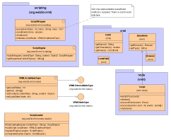

Xj3D VRML200x SAI Implementation
Author: Justin Couch
Last updated: $Date: 2001/07/04 11:45:04 $
Revision: $Revision: 1.1 $
Intro
This document describes the implementation of the VRML200x Java Scene Authoring
Interface (SAI) specification.
Background
Motivation
Structural Overview
Code Layout

Figure 1: UML Structure diagram of the VRML scripting classes
Script Loading Infrastructure
Script Runtime Structure
Runtime Semantics
Loading a Script

Figure 2: UML sequence diagram of the load process
Processing incoming events
Processing outgoing events
Not implemented yet.
Extending the Code
References
Language Specific Implementations
Specifications